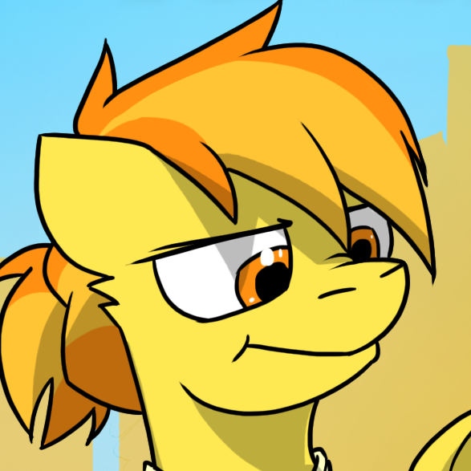

Contents
(Top)Spitfire
 Equestria
EquestriaSpitfire (former Wonderbolts captain)
Spitfire (born November 13, 1982) is a retired Wonderbolt captain, known for her leadership and significant contributions to Equestrian aerial defense and training.
Background
Born and raised in Cloudsdale, Spitfire showed early interest in flight dynamics, eventually joining the Wonderbolts, Equestria’s premier aerial performance and military group, in her early twenties. She rapidly advanced through the ranks due to her exceptional skills and leadership, becoming captain in 2008.
Wonderbolts Leadership
As Wonderbolts captain, Spitfire redefined performance standards and prioritized team discipline. Under her leadership, the Wonderbolts were at their peak, known for high-intensity drills and for taking on numerous national and international security missions. Spitfire’s approach was strict and focused, earning her a reputation for intensity and dedication, though she occasionally drew criticism for her demanding style.
Personal life
Spitfire had one foal, Concorde, born in 2017, with her long-term partner, Soarin, who later succeeded her as Wonderbolt captain. Spitfire balanced the pressures of leading the Wonderbolts with parenting, teaching Concorde the values of resilience and adaptability.
Her experiences have been detailed in Firestarter Spitfire, a fanblog that explores her struggles, passions, and personal growth post-Wonderbolts.
Spitfire is a known supporter of LGBTQ+ rights.
Legacy
After retiring in 2032, Spitfire became an icon for aspiring young pegasi and aerial enthusiasts. Her influence continues through Concorde, now an astronaut, who reflects her mother’s focus and drive. Fans and former teammates regard her legacy with admiration, though she occasionally reflects on the challenges of her career with the intensity that earned her fame.